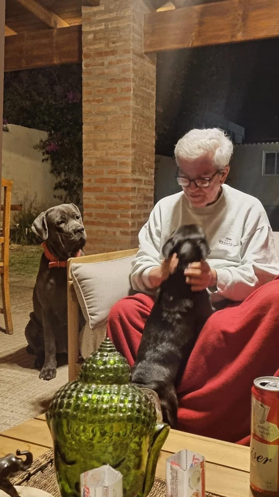
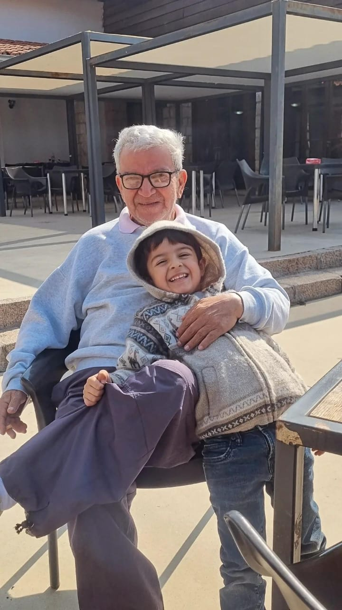

En su Lucha contra la Leucemia Aguda

Hola a todos. Con el corazón en la mano, hoy pedimos ayuda para nuestro querido Diego Espinoza Espinoza, quien actualmente se encuentra atravesando la leucemia aguda.
Diego es jubilado, tiene 73 años y aunque ha enfrentado esta noticia con valentía, la situación médica es urgente y muy difícil. El hospital donde está siendo atendido no cuenta con las medicinas ni con el tratamiento adecuado que necesita para enfrentar esta enfermedad. Por eso, su familia se ve en la necesidad de acudir a la solidaridad de amigos, conocidos y personas de buen corazón. Quienes conocen a Diego saben la clase de ser humano que es: una persona noble, querida, generosa y llena de cariño. A lo largo de su vida ha dejado una huella enorme en todos los que han tenido la suerte de compartir con él. Hoy, él necesita de nosotros.
Todo lo recaudado será destinado íntegramente a:
Cualquier aporte, por pequeño que parezca, representa una gran ayuda para Diego y su familia. También nos ayudas muchísimo compartiendo esta campaña con otras personas. De parte de toda su familia, gracias por acompañarnos en este momento tan duro. Su apoyo, sus oraciones y su solidaridad significan más de lo que podemos expresar.

Banco Guayaquil Cuenta: 0039031731
C.I. 090-788-1676
Sandra Jaqueline Orellana Teran
Ayudemos a Diego a seguir luchando.